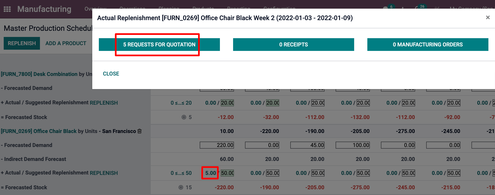

Utilizar el programa maestro de producción¶
El programa maestro de producción (PMP) es una valiosa herramienta para planificar la producción a partir de la previsión de la demanda.
Configuración¶
Vaya a la aplicación y active la función del Programa maestro de producción antes de hacer clic en guardar.
Truco
Desde los ajustes del programa maestro de producción puede definir el intervalo de tiempo de su PMP (mes/semana/día) y el número de periodos que desea mostrar en todo momento.
Ahora vaya a y haga clic en agregar un producto. Podrá definir su objetivo de existencias de seguridad (es decir, las existencias que quiere tener a la mano al final del periodo) y las cantidades mínimas y máximas que se pueden o se deben reabastecer en cada periodo.
En la vista del PMP, puede decidir qué información desea mostrar haciendo clic en las filas. Se pueden añadir algunos campos a la vista, como Demanda real, que mostrará la cantidad de productos ordenados para el periodo, o Disponible para prometer, que le permite saber lo que todavía se puede vender durante el periodo (el reabastecimiento previsto - lo que ya se vendió durante el periodo). También puede decidir ocultar cierta información si no es necesaria.

Calcule su demanda e inicie el reabastecimiento¶
El siguiente paso es estimar la demanda para el periodo. Esta estimación debe introducirse en la fila Previsión de la demanda. En cualquier momento puede comparar la previsión de demanda con la demanda real (= ventas confirmadas). La previsión de la demanda de un producto final tendrá un impacto en la demanda indirecta de sus componentes.

A continuación, se calculará automáticamente la cantidad a reabastecer para los distintos periodos. Se muestran en verde los reabastecimientos que debe iniciar según los plazos de entrega (plazo de entrega del proveedor o plazo de entrega de la fabricación). Para iniciar el reabastecimiento, haga clic en el botón de reabastecimiento.
Se crearán solicitudes de cotización u órdenes de fabricación según la configuración del producto (compra o fabricación). Puede acceder fácilmente a ellas haciendo clic en la celda Reabastecimiento real.
En caso de editar manualmente la cantidad A reabastecer, aparecerá una pequeña cruz a la izquierda. En caso de que desee volver al valor calculado automáticamente por Odoo, puede hacer clic en la cruz.
Significado del color de las celdas¶
Las celdas que forman parte de la línea reabastecimiento sugerido pueden tomar distintos colores según la situación:
Verde: cantidad de productos que se deben de reabastecer para alcanzar las existencias de seguridad previstas teniendo en cuenta la previsión de la demanda y la previsión de la demanda indirecta.
Gris: ya se ha generado la orden de reabastecimiento y su cantidad sigue coincidiendo con los datos actuales.
Rojo: ya se ha generado la orden de reabastecimiento y su cantidad era demasiado alta considerando los datos actuales.
Naranja: ya se ha generado la orden de reabastecimiento y su cantidad era demasiado baja considerando los datos actuales.
La línea de previsión de existencias también puede contener celdas rojas, lo que significa que las existencias serán negativas durante dicho periodo.
¿Qué pasa si subestimé la demanda?¶
Todavía puede aumentar la previsión de la demanda. Esto repercutirá en la cantidad a reabastecer. La celda se volverá naranja y podrá iniciar un nuevo reabastecimiento.
¿Y si sobrestimé la demanda?¶
Puede disminuir la previsión de la demanda. La celda se volverá roja para informarle que ha ordenado más de lo previsto. Si todavía puede, cancele manualmente algunas solicitudes de cotización u órdenes de fabricación.
¿Qué pasa si me equivoco y agrego un producto que no debería ir en el programa maestro de producción?¶
Puede eliminar un elemento del PMP al hacer clic en el icono de la papelera ubicado a la derecha del producto.